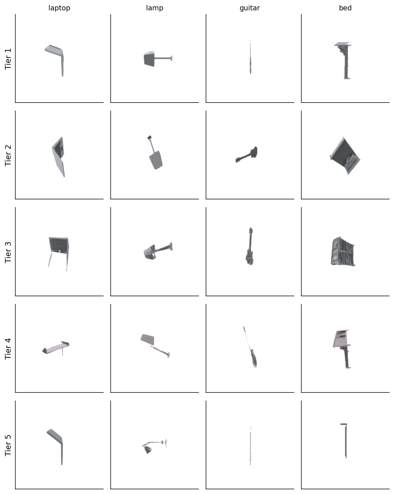
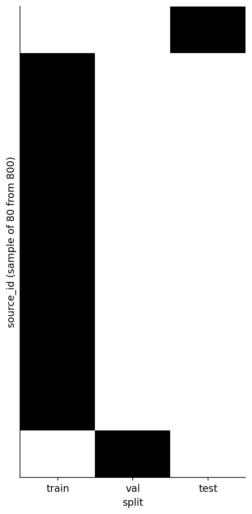
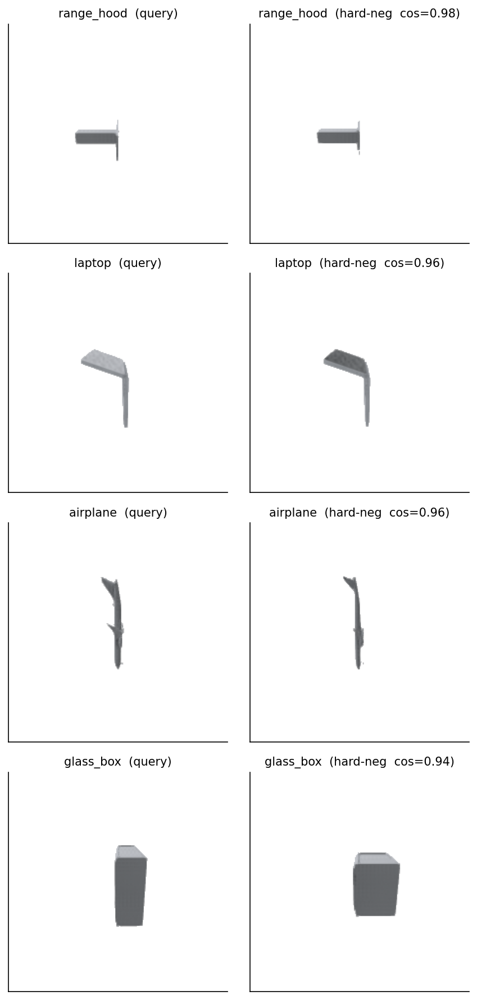
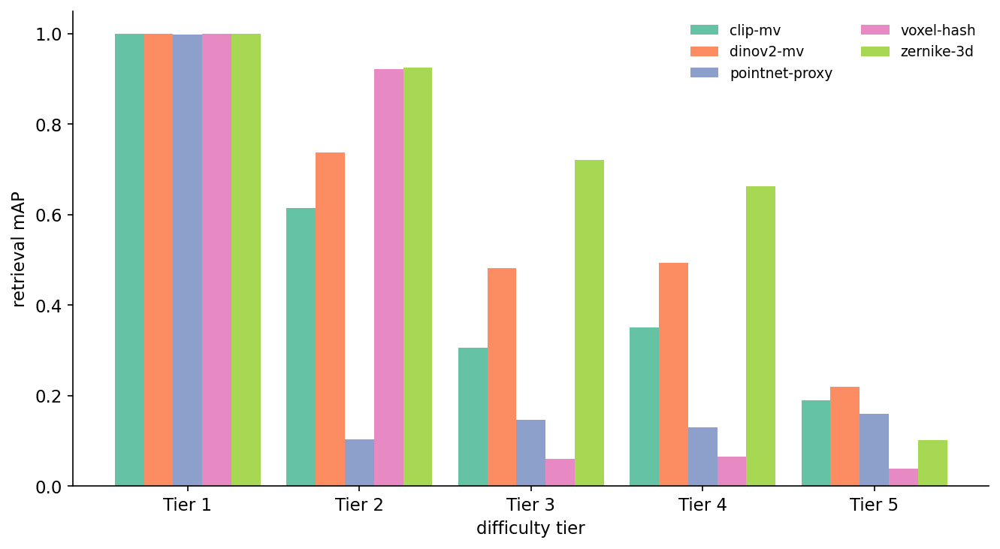
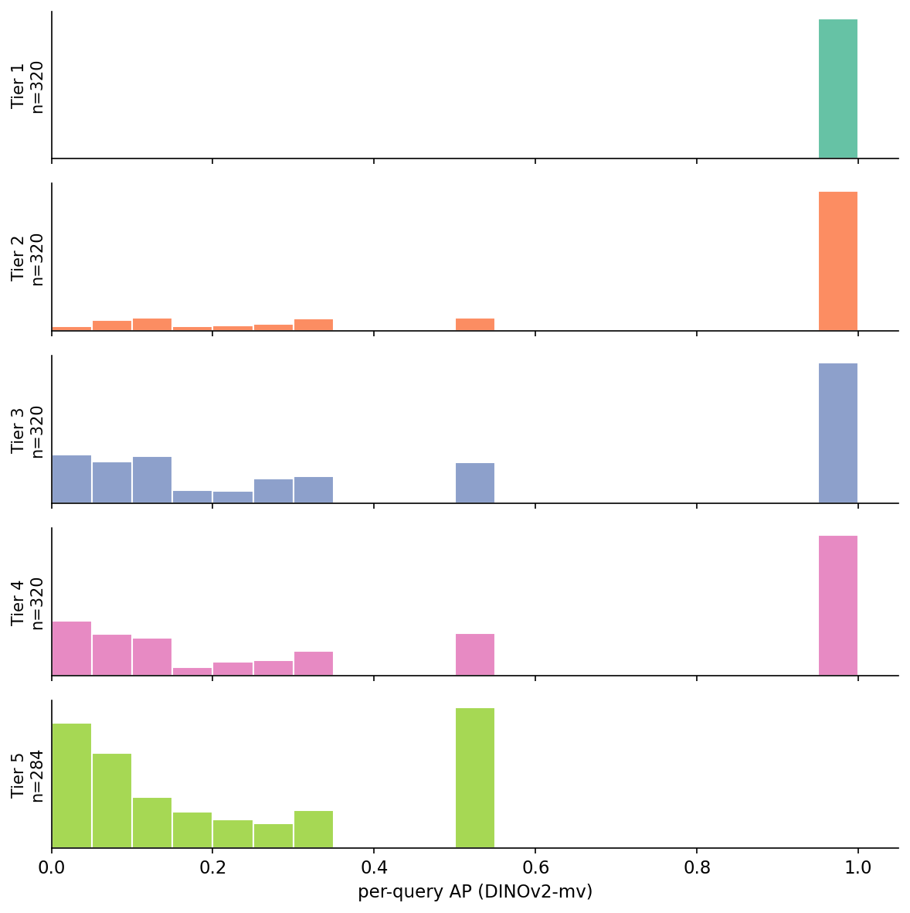
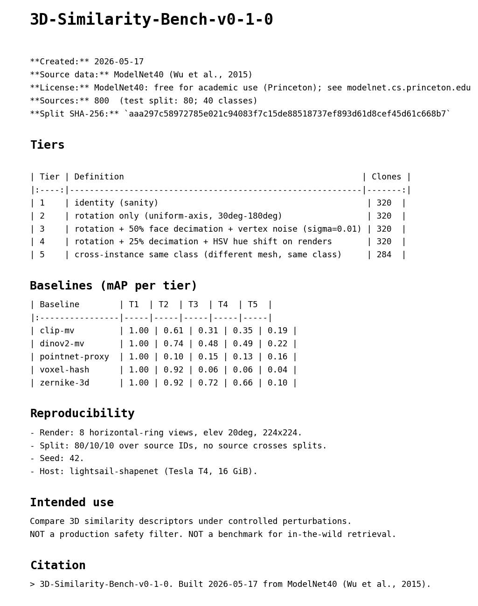
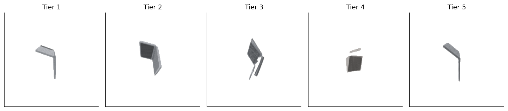

By Sunday night I had a benchmark and a surprise: across four of the five difficulty tiers, the highest-scoring baseline was not multi-view DINOv2 or CLIP. It was Zernike — a rotation-invariant shape descriptor from 2003. DINOv2-mv scored 0.48 mAP on Tier 3; Zernike scored 0.72. Then on Tier 5 — same class, different mesh — Zernike collapsed to 0.10 while DINOv2-mv held the top spot at 0.22. One number for the whole benchmark would have hidden both results inside a mean. The five-tier split puts them on the same page.
The point of the post is not those particular numbers. They will move every time somebody plugs in a better encoder. The point is the part of the benchmark you cannot copy off arXiv: the tier taxonomy, the seeded split with a published SHA, and the dataset card that ties them together. Posts 09, 11, and 12 of this series gave me one-off evaluations of voxel-hashing, multi-view DINOv2, and a HOG / CLIP / PointNet-proxy bakeoff. This post turns those one-offs into a single artifact and ships the artifact with all the bookkeeping that lets a stranger reproduce it.
%%{init: {'theme': 'neutral'}}%%
flowchart LR
A[ModelNet40
800 sources balanced
across 40 classes]
B[80 / 10 / 10 split
by source ID]
C[Test split
~80 sources]
D[5 tiers x 4 clones
per source]
E[Hard-neg mining
top-50 same-class
under DINOv2]
F[5 baselines
CLIP, DINOv2,
Zernike, voxel, PointNet]
G[mAP per tier
+ dataset card
+ split SHA]
A --> B --> C --> D
C --> E
D --> F
E --> F
F --> G
If you only report one mAP, you are reporting a weighted average across whatever mix of perturbations you happened to feel like running. Two benchmarks that both say "mAP = 0.62" can disagree by half if one is mostly rotated copies and the other is mostly cross-instance pairs. The single number is incompatible with itself across reports.
A tier taxonomy fixes that by forcing you to commit upfront to a partition over query difficulty. I went with five tiers, each narrow enough to isolate one failure mode.
Tier 1 is identity. The query is a render of the exact source mesh. Tier 1 is a sanity tier — if a method scores less than 1.0 here, the indexing is broken. It is not a real evaluation; it is a check that the code wasn't lying about what it was comparing.
Tier 2 is rotation only. The mesh is rotated by a uniformly-sampled angle in 30 to 180 degrees around a uniformly-sampled axis. Renders see a different pose; the geometry is byte-identical otherwise. Tier 2 isolates rotation-robustness — the property Post 10 measured ablations against.
Tier 3 is rotation plus 50% face decimation plus vertex noise at σ = 0.01 of the bounding-box diagonal. This is the regime where a real production duplicate-detector spends most of its time: meshes re-saved by different exporters, re-meshed at lower resolution, or jittered by quantization. Tier 3 should still be solvable; nothing here destroys the gross shape.
Tier 4 is rotation plus 25% decimation plus an HSV hue shift on the rendered images. The hue shift is the texture-swap proxy from Post 12 — it lives on rendered pixels, not on the mesh, so it survives any renderer choice. Tier 4 starts to break encoders that lean on appearance over geometry. The one honest caveat: ModelNet40 renders without per-vertex color come out mostly grayscale, so a hue rotation does very little to most pixels (look at Figure 8's Tier 4 cell — the chair-laptop is the same gray). Tier 4's real bite comes from the decimation step.
Tier 5 is cross-instance same class. The "match" is a different mesh that happens to belong to the same class. This is the hardest tier and the one most papers conveniently exclude. A retrieval system that confuses two different chairs is doing class recognition, not duplicate detection. Tier 5 measures how strongly your descriptor encodes class identity at the expense of instance identity — a real concern if your downstream use case cares about the distinction.

def make_splits(picked, seed):
rng = np.random.default_rng(seed)
idx = np.arange(len(picked)); rng.shuffle(idx)
n_train, n_val = int(round(0.80 * len(idx))), int(round(0.10 * len(idx)))
parts = ["train"] * n_train + ["val"] * n_val + ["test"] * (len(idx) - n_train - n_val)
split = [""] * len(idx)
for i, k in enumerate(idx):
split[k] = parts[i]
return splitThree lines of substance. The benchmark uses 800 ModelNet40 sources balanced across all 40 classes (20 per class, sampled at seed 42), split 80/10/10 by source ID. No source crosses a split — the rule is applied before the perturbation step, so a train mesh and its 16 tier-1-through-4 clones all stay in train. If your benchmark splits at the clone level you have leakage and you will not notice until somebody outside your group tries to reproduce your numbers and gets a 5-point drop.
The split file lives at data/splits.csv. It carries one column for a SHA-256 over the canonical (source_id, split) listing, computed after sorting:
def split_sha(rows):
canon = sorted([(sid, sp) for sid, _, sp in rows])
payload = "\n".join(f"{a}\t{b}" for a, b in canon).encode()
return hashlib.sha256(payload).hexdigest()For this run the SHA is aaa297c58972785e021c94083f7c15de88518737ef893d61d8cef45d61c668b7. Anyone who reruns the build with seed 42 against the same ModelNet40 source corpus should get the same SHA. If they don't, either the corpus drifted under them or the seed changed — both are bugs and both are recoverable. Without the hash there is nothing to recover from. With it, two people in different timezones can compare a one-line value and know within a second whether their evaluations are talking about the same set of objects.

splits.csv: every row goes to exactly one of train, val, or test. The rule is enforced at sample time, before any perturbations. This is what no-source-leakage looks like in a picture; the heatmap has exactly one black cell per row.The hash is the verification handle; the split is the verification subject. Both have to agree before two reports of "mAP = 0.72" actually mean the same thing.
Random negatives are easy and useless. If a chair query gets ranked against 798 not-chairs and one other chair, picking the chair is not a hard discrimination task — even Tier 5 looks easy. Real benchmarks mine hard negatives: same-class peers with high embedding similarity, the ones a model is most likely to confuse with the true match.
sims = src_dino @ src_dino.T # cosine, vectors L2-normed
for qi, q in enumerate(sources):
same_class = np.where(classes == q.cls)[0]
same_class = same_class[same_class != qi]
top_k = same_class[np.argsort(-sims[qi, same_class])[:50]]The miner uses DINOv2-mv similarity to score same-class peers, ranks them descending, keeps the top 50. The output (data/hard-negatives.csv) has 50 same-class hard-neg rows per test query. The bootstrap problem is that the miner uses one of the baselines to define hardness for the evaluation of that same baseline — DINOv2 will tend to score its own hard-negs as harder than another encoder's hard-negs. The honest mitigation is to publish the mining procedure and pin it to one stable embedder (DINOv2-ViT-B/14, last layer CLS, mean-pooled over 8 ring views). Future contributors can run their own miner and publish a comparison. Pretending the circularity doesn't exist is the dishonest mitigation.

hard-negatives.csv, picked across four classes by descending cosine similarity. The range-hood pair is the cleanest case — same canonical T-shape, same axis, completely different mesh. Cosines are all in the 0.94 to 0.98 range, which is what "hard same-class negative" means on the DINOv2 manifold.The baselines come straight out of earlier posts in the series. The point isn't that any of them is novel — the point is that a benchmark exists exactly when the same evaluation kit takes any of them as input. Each baseline lives in code/main.py as a function that takes meshes or rendered views and returns a (N, D) matrix; the eval loop is identical across all five.
DINOv2-multiview, from Post 11. Eight horizontal-ring views at elevation 20 degrees, fed through facebook/dinov2-base, CLS token, mean-pool, L2-norm. 768 floats.
from transformers import AutoImageProcessor, AutoModel
m = AutoModel.from_pretrained("facebook/dinov2-base").to(device).eval()
p = AutoImageProcessor.from_pretrained("facebook/dinov2-base")
feats = m(**p(images=batch, return_tensors="pt").to(device)).last_hidden_state[:, 0, :]CLIP-multiview, from Post 12. Same eight views, fed through openai/clip-vit-base-patch32's image encoder, 512 floats. The trick I forgot the first time: newer transformers versions wrap get_image_features in a BaseModelOutputWithPooling object, so you need to check for pooler_output before calling .cpu(). Three lines, lost forty-five minutes.
Zernike-3D, from Post 07. Voxelize at 32³, compute per-shell spherical-harmonic coefficients out to n_max=6, take the rotation-invariant power-sum identity F_{n,l} = sqrt(sum_m |c_{n,l,m}|^2). The shared kit ships this as ZernikeApprox — per-shell SH coefficients, not the full Novotni 2003 radial polynomial. Distances are reliable; absolute values aren't directly comparable to published Novotni numbers. Use cosine, not L2 — the kit's STATUS file is loud about this.
Voxel-hash-32, from Post 09. PCA-align the mesh, voxelize to 32³, take a perceptual hash on the occupancy grid. Returns a 32-character hex string (128 bits). I compare hashes by bit-vector cosine on np.unpackbits, which is monotone with Hamming similarity.
PointNet-proxy, from the shared kit. NOT a learned PointNet — it's a deterministic geometric proxy that returns three principal-component eigenvalues plus a 16-bin histogram of normalized z-coordinates from 1,024 surface samples. 19 floats. The API matches what a real frozen-PointNet checkpoint would return so a future contributor can swap in pointnet_features = lambda m: real_pointnet(m) without changing call sites. Every PointNet-proxy number in this post is "what the 19-D geometric proxy does," not "what a real PointNet does."

Table 1. Per-tier mAP on the test split. Bold marks the best score in each column. The bottom row is n_queries, identical across baselines so the gap is in the descriptor, not the test set.
| Baseline | Tier 1 | Tier 2 | Tier 3 | Tier 4 | Tier 5 |
|---|---|---|---|---|---|
| DINOv2-mv | 1.00 | 0.74 | 0.48 | 0.49 | 0.22 |
| CLIP-mv | 1.00 | 0.61 | 0.31 | 0.35 | 0.19 |
| Zernike-3D | 1.00 | 0.92 | 0.72 | 0.66 | 0.10 |
| Voxel-hash-32 | 1.00 | 0.92 | 0.06 | 0.06 | 0.04 |
| PointNet-proxy | 0.998\* | 0.10 | 0.15 | 0.13 | 0.16 |
| n_queries | 320 | 320 | 320 | 320 | 284 |
Source: data/baseline-results.csv (25 rows). \* PointNet-proxy missed exactly one Tier 1 query out of 320 — almost certainly a PCA-axis-ambiguity flip on a near-symmetric mesh, which is the failure mode the sanity tier is designed to surface. The 19-D proxy collapses to mAP = 0.998 instead of 1.00; a learned PointNet would be expected to fix it.
The headline is not "DINOv2 wins". On four of five tiers the highest mAP belongs to Zernike, a 2003 descriptor with 28 dimensions — and on the fifth tier the highest mAP is 0.22, which is barely a ranking. That two-fact pair is the whole reason the post exists. A benchmark that hides it inside an averaged "mAP = 0.74" looks better and tells you nothing. A benchmark that calls Tier 5 out separately tells you exactly where to spend the next year of work.
Read each method's collapse separately. CLIP-mv is the most appearance-leaning encoder of the five and it pays for that the moment the geometry changes at all (Tier 2 already drops to 0.61). DINOv2-mv has better visual priors and holds rotation better, but loses to Zernike on the geometry-only tiers because a 28-D rotation-invariant shape vector is, for this task, a better-conditioned thing to compare than a 768-D image-trained embedding. Voxel-hash is the surprising story: identical to Zernike at Tier 2 (0.92), then a vertical drop to 0.06 the moment vertex noise enters. The hash's PCA alignment is brittle; even tiny vertex jitter swaps the principal axes and the hash bits realign to a different canonical frame. PointNet-proxy is rotation-blind by design (the 19 features are PCA-aligned), so it sits at the floor whenever the rotation axis flips the principal-component order.
Tier 5 is the wall. The best score (DINOv2-mv at 0.22) means a randomly-picked same-class peer beats the true match more often than not. This is not a bug in the baselines. Cross-instance same-class retrieval is genuinely hard; you cannot solve it with embeddings that were trained for class-level pattern matching. The Tier 5 column is the part of the benchmark that says "the next year of methodology work goes here."
A per-tier mAP is a mean. Means hide bimodality, and bimodality is interesting.

The Tier 5 shape is the most useful signal in the whole report. It means "hard cross-instance retrieval" is not a single difficulty knob — it's a mixture of "the encoder confused two specific same-class peers" and "the encoder couldn't even find the target inside the same class." A method that fixes Tier 5 by lifting the 0.5 spike to 1.0 is a real improvement. A method that lifts the left tail by improving class-level discrimination is gaming the metric on a population it was already class-aware about. Without per-query histograms you cannot tell those two improvements apart. The cost of having the histogram was one extra column in the eval loop.
DATASET_CARD_TEMPLATE = """# 3D-Similarity-Bench-v{version}
**Source:** {source}
**License:** {license}
**Sources:** {n_sources} (test split: {n_test_sources}; {n_classes} classes)
**Split SHA-256:** `{split_sha256}`
## Tiers
... (table of tier definitions and clone counts)
## Baselines
... (table of mAP per tier per baseline)The dataset card is the one deliverable I'd put above the baselines themselves. A benchmark without a card is a folder of CSVs with implicit conventions; six months from now you won't remember which seed you used or what the split SHA was supposed to be. The Hugging Face dataset-card spec is a fine starting place — license, source, splits, tier counts, hash, baseline scores, and intended use, all in one markdown file the script regenerates from benchmark-summary.json.

build_visuals.py from benchmark-summary.json and baseline-results.csv; you never write it by hand. The point of regenerating is that the card cannot drift from the data — the baseline scores are filled in from the same CSV the eval loop wrote thirty seconds earlier.The intended-use section is the part most cards skip and most users actually need. "Compare 3D similarity descriptors under controlled perturbations" is a fine intent. "NOT a production safety filter. NOT a benchmark for in-the-wild retrieval" is the warning that keeps a stranger from cargo-culting your numbers into a system you did not design for.
The benchmark covers 40 ModelNet40 classes. ModelNet40 is heavily skewed toward indoor furniture and a handful of vehicles; it has no organic shapes, no humans, no scenes. A benchmark trained against ModelNet40 will overfit to the kinds of objects ModelNet40 thinks exist. Anyone using this for retrieval over an open object catalog should expect the absolute mAP numbers to drop a lot.
The tier definitions are subjective. I picked five tiers because that's what the difficulty curve in Post 12 already showed three useful breakpoints in, plus a sanity floor and a hardness ceiling. A future version could merge Tier 1 into the sanity-check section and add a per-method intermediate tier for, say, scale variation. The right number of tiers is the smallest number that produces a visibly different ranking across methods. Five does the job; four might also.
The hard-negative miner uses DINOv2 to score hardness for an evaluation that includes DINOv2. The bootstrap circularity is real and named in the dataset card. The honest fix is to publish multiple miners and let the reader pick; the bandaid is to pin the miner to DINOv2-ViT-B/14 forever so at least the choice is consistent over time.
Tier 4's HSV hue shift is more of a label than a perturbation on this corpus. ModelNet40 has no texture data, so renders come out grayscale, and a hue rotation on gray pixels is invisible. The decimation step is doing the real work in Tier 4. A v0.2 that uses ABO (which ships textures) would let Tier 4 actually exercise appearance-based encoders the way Tier 4 is supposed to.

A v0.2 could swap PointNet-proxy for a real frozen PointNet checkpoint (the kit's pointnet_features API is already the right shape). It could add Tier 6 for cross-class adversarial pairs — the chair-stool / monitor-tv_stand collisions from Post 06's confusion matrix. It could replace ModelNet40 with ABO or a mixed corpus; the build script's sample_balanced_modelnet40 is a single function with one input dataset. The pipeline does not change.
A v1.0 would publish the split file and the dataset card to Hugging Face Datasets, register a leaderboard, and accept submissions of new embedder outputs as .npy files keyed to the published manifest. None of that is in scope for a weekend.
The thing I want the reader to take away: the benchmark infrastructure — the tier taxonomy, the seeded split, the hash, the card — outlives every individual baseline. The next encoder to ship will rerun code/main.py, append its row to baseline-results.csv, and regenerate the card. The fact that the row appends cleanly is the entire point of having built the infrastructure first.
By Sunday night, with five baselines and a card, the benchmark looked like a benchmark. The Tier 3 winner will change every time a new method ships. The split SHA will not. That asymmetry is what makes the next person's contribution composable with yours.
| Item | Value |
|---|---|
| Dataset | ModelNet40 (Wu et al., 2015) — 12,311 OFFs across 40 classes |
| Sources used | 800 (20/class balanced sample, seed 42) |
| Split | 80/10/10 by source ID, no leakage; SHA aaa297c5...c668b7 |
| Tiers | 1: identity / 2: rotation / 3: rot+decim+noise / 4: rot+decim+hue / 5: cross-instance |
| Clones per source per tier | 4 |
| Renders | 8 horizontal-ring views, elev 20°, 224×224 |
| Encoders | DINOv2-ViT-B/14, CLIP-ViT-B/32, Zernike (n_max=6, grid=32), voxel-hash-32, PointNet-proxy (19D) |
| Metric | mAP = mean of 1/(rank+1) where the true target is the source mesh; recall@k also reported. With one relevant item per query, mAP collapses to MRR (mean reciprocal rank) — same math, different name in IR-land |
| Hard-neg miner | DINOv2-mv, top-50 same-class by cosine |
| Hardware | lightsail-shapenet (Tesla T4, 16 GiB), conda env 3d-dedup |
| Wall clock | ~40 minutes end-to-end (after a one-time cache of DINOv2 embeddings) |
| Data files | data/benchmark-manifest.csv, data/splits.csv, data/baseline-results.csv, data/tier-difficulty.csv, data/hard-negatives.csv, data/dataset-card.md, data/benchmark-summary.json |
| Code | code/main.py end-to-end, code/build_visuals.py for all figures, code/make-construction-diagram.py for the pipeline figure |
Every number cited in the post traces to one of those CSVs. The build script runs end-to-end with python code/main.py on a fresh Tesla T4 in well under an hour. Re-running with the cached .npy files cuts the time roughly in half.
Part 16 of 20 · Back to the series index